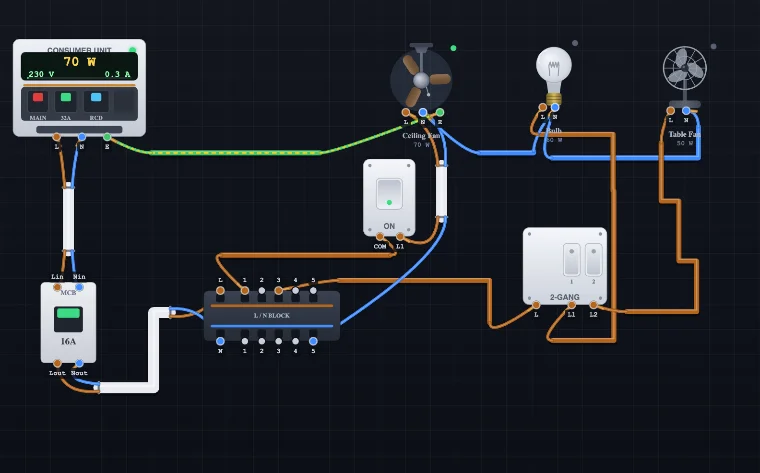
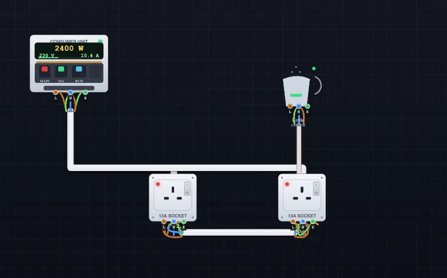
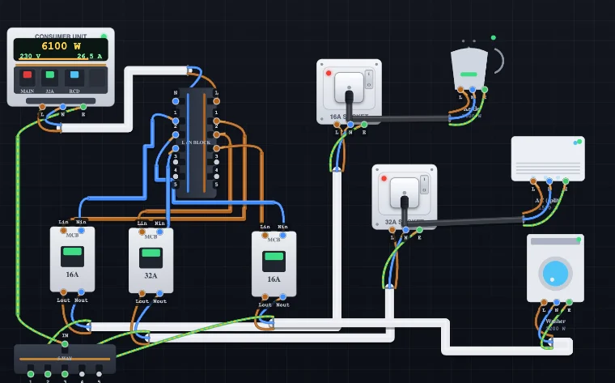

House Wiring Simulator — Practice Home Electrical Circuits
3D Model — House Wiring Simulator — Practice Home Electrical Circuits
Free house wiring simulator — wire switches, sockets, lamps and a consumer unit with real twin-and-earth cable, then watch lamps light and MCBs trip.
Real Components • True Multicore Cables • SWG, Amp & Volt-drop • Live Faults — Simulate • Explore • Practice • Quiz • Test
Σ Live equations — from the current circuit
1 Overview
The Electrical Wiring Simulator is a hands-on domestic installation trainer. You place realistic components — a consumer unit with breakers, one-way and two-way wall switches, 13 A sockets, ceiling roses, lamp holders and household appliances — onto a workbench, then wire them together with true multicore cables. Each cable end fans out into its individual coloured conductor nodes (brown Line, blue Neutral, green-yellow Earth), exactly like stripping a real cable. Turn the power on and the circuit comes alive: lamps light, fans spin, breakers trip and overloaded cables overheat.
It is built for electrical trainees, vocational students and instructors who want to practise wiring safely before touching real conductors.
2 Getting Started
- Add a component: tap a palette item to drop it on the board, or drag it straight from the palette to the exact spot you want. Either way you can drag it again on the board to reposition.
- The consumer unit: the Consumer Unit is your origin. Its face is a live meter — a digital display of power (W), voltage (V), current (A) and a load bar — and its three breakers are clickable: tap MAIN to switch the whole supply, the MCB to reset a trip or isolate, and RCD to fit or remove 30 mA protection.
- Protect a section: drop an MCB Breaker in-line on a circuit — it now carries Line and Neutral (Lin/Nin in, Lout/Nout out), switching the Line and passing the Neutral through. Set its rating; it trips if that section is overloaded; tap it to reset. For a cooker or shower use the 45 A Cooker / DP Switch, a double-pole isolator that breaks both poles together.
- Join many wires: use a Connector Block as a distributor — all its terminals are one common node, so you can branch one connection (Line, Neutral or Earth) out to several conductors. Select it and press ↻ Rotate 90° (inspector or toolbar, or R) to turn it to any of four orientations so it lines up neatly with your wiring.
- Add a wire: in the Add Wire panel pick a wire type (single core, Twin & Earth, 3/4/5-core, armoured SWA, flex, power cord…) and a size, then press Insert Wire. It appears with coloured conductor nodes at each end.
- Wire it up: drag a conductor node (the small coloured dot at a cable tip) onto a component terminal to make a connection.
- Join two wires: drag one conductor tip onto another conductor's tip — an insulator connector appears over the splice. Click that connector (or tap either connected conductor) to open the joint again.
- Bend & route a cable: select a cable and grab the round anchor just past either end. Drag it along the cable to extend that side, or drag it sideways (90°) and the cable folds a right-angle corner and continues in that direction — keep dragging and turning to add more corners. Drag the cable body to move the whole run, drag a corner to reshape it (right-click a corner to remove it), and use the ↻ button (or R) to rotate 90°.
- Plug in an appliance: in the Wire Builder pick Power cord — 3-pin plug, add it, and wire its bare end into an appliance's L, N, E. Then drag its moulded 3-pin plug onto a 13A socket — it seats in the face and connects Line, Neutral and Earth automatically. Tap the socket to flip its switch — the red neon glows when it is switched on and live, and the appliance only runs when the socket is on.
- Sockets & junctions: use a single 13A socket, a double socket (two independently switched outlets on one supply — plug an appliance into either face), a fused socket with its own 3/5/13 A cartridge fuse in the live path (it blows before the main breaker on a fault, and you replace it from the inspector), or an unswitched socket (permanently live — for fridges and freezers that must not be switched off). A maintenance-free junction box gives four independent terminals for loop-in lighting (permanent Line, Neutral, switched Line and Earth).
- Quick power cord: instead of dragging a plug in from the palette, select any socket and use its inspector Power cord toggle — a cord appears already seated in the outlet (button reads PLUGGED IN), ready to wire its other end into an appliance. Toggle it off to remove.
- PIR / occupancy sensor: wire L in, N and the switched Load out to a light, then tap the sensor to simulate motion — it switches the load on while motion is detected and shows a motion / no-motion indicator.
- Photocell (dusk-to-dawn) sensor: the opposite of a timer — wire L in, N and the switched Load out, then tap to toggle day / night. It switches the load on automatically when it goes dark and off in daylight (street & security lighting).
- Smoke detector: wire L and N for power (a green LED confirms mains health). Tap it to simulate smoke — it flashes red and sounds; thanks to its battery backup it still alarms with the mains off.
- Switching: choose the right switch for the job — 1-way (on/off), 2-way (a light from two places), an Intermediate crossover switch (drop it between two 2-way switches to control a light from three or more points), or a 2 / 3 / 4-gang switch (one common Line feeding several lights). Tap any switch on the board to operate it.
- Bell push (momentary): a spring-return push that closes COM → L1 only while you press and hold it — the classic doorbell button. Wire the Line through it to a bell or buzzer.
- Rotary dimmer: a resistive dimmer / fan speed controller. Click its ◀ / ▶ sides (or drag the inspector slider) to change the level; the tool computes the series resistance and voltage drop so the lamp visibly dims and draws less power — watch R, Vload and the brightness update live.
- Timer switch (staircase timer): wire L in, N and the switched Load out; tap to run and it holds the load on for a set duration (5–60 s), counts down on its dial, then switches itself off — the landing/corridor light that turns itself off.
- Selector switch: a 3-position rotary that routes the COM input to output 1, 2 or 3 — pick which of several circuits is fed (Manual/Off/Auto, or one of three lamps). Tap to step through the positions.
- Isolator switch: a red rotary double-pole isolator that breaks both Line and Neutral together for safe working — the lock-off point beside an AC unit, boiler or sub-board.
- Generator & changeover (standby power): add a Generator (a second live source — tap to start it) and a Changeover Switch. Wire the consumer unit into the changeover’s Mains side and the generator into its Gen side, then select MAINS / OFF / GEN. On GEN the load runs from the generator — switch Power OFF to simulate a mains failure and watch the generator keep it alive (generator-fed loads are metered on the generator, not the consumer unit).
- Surge Protection Device (SPD): a Type-2 device wired in parallel across L, N and E at the consumer unit. It sits idle in normal use and diverts surges to earth; its window shows green (healthy) or red (end-of-life). Land the incoming L/N/E on it and continue them onward.
- Emergency light: a non-maintained fitting — wire its permanent L and N. While the Line is live the battery charges and the lamp stays off (green LED); the moment the Line loses power (a cut, an upstream trip, or Power OFF) it fires its LED from the internal battery automatically.
- Energise: press Power ON. Toggle switches by tapping them.
- Edit tools (bottom of the canvas): Undo, Redo, Duplicate, Rotate cable, Delete and Clear.
- Multimeter (debug tool): click the meter button in the canvas toolbar (next to Duplicate) to bring up a floating multimeter. Drag its body anywhere, and drag the red and black probes onto any terminals or conductor tips — they clamp on like a connection. Switch between V (voltage between the two points), A (current — the correct way is to clamp one probe onto a wire to read the current it carries without breaking anything, or to break the Line and insert the meter in series so the load is fed through it. Just like a real ammeter, clipping both probes straight across a live pair — Line to Neutral, or across a running appliance — is a dead short, so the meter flashes a shorted! warning instead of a reading) and Ω (continuity — beeps when the two points are on the same net, and works with the power off). Read L–N = 230 V, 230 V across an open switch, 0 V across a closed one, and the live current in any cable. Close it with the meter button again or the × on the meter.
- Resize a component or load: select it and drag the round grip on the bottom-right corner of its outline to scale it between its full size and a compact minimum — every detail stays readable and every switch stays tappable even at the smallest size. You can also set an exact size with the Size slider in the inspector, or right-click and pick Minimum / Maximum size.
- Right-click for quick actions: right-click any item for a menu — Properties, Minimum / Maximum size, Duplicate and Remove for that item, plus Save as Image, Copy Reading and Clear Board.
- Double-click to edit properties: double-click a component, load or cable to open its Properties pop-up — the very same controls as the side inspector (rating, fuse, wattage, state, size). Changes apply live as you make them; press OK to close, or Delete to remove the item.
- Left panel: the Selected Item inspector sits at the top and opens automatically when you select something on the board (and folds away when nothing is selected). Below it the palette is split into industry-standard functional groups — Supply & Protection, Switching & Control, Sockets & Outlets, Connections & Junctions, Sensors/Safety/Emergency, then the load groups Lighting, Motors & Appliances and Heating & High-power. Click any heading to fold that group away.
- Keyboard: Ctrl+Z undo, Ctrl+Shift+Z (or Ctrl+Y) redo, Ctrl+D duplicate, R rotate a selected cable, Delete delete (Shift+Delete clears the board), P power, G generate.
- Save / Open: use Save to download your circuit as a
.jsonfile and Open to load one back later — handy for sharing or resuming work. - Your work is kept automatically: the board is saved in your browser as you go, so if you close the tab or refresh by accident it comes back exactly as you left it — you’ll see “Restored your last circuit”. Opening a shared link always takes priority over the saved board, and nothing is ever uploaded — it stays on your own device.
- Fullscreen: the Fullscreen button (or F) expands the workbench to fill the screen.
- Examples: pick a circuit from the Load an example menu and it loads instantly, fully wired, for you to study or modify.
- Tip banner: the banner across the top of the board explains the loaded example. Your first click on the canvas tucks it away behind a small ℹ info button in the top-left corner — click that button any time to read the tip again (loading a new example brings it back).
3 Simulate Mode
Simulate is the wiring workbench. The toolbar gives you Power, an example-circuit menu, a 230 V / 120 V supply toggle, and Save / Open / Fullscreen; the in-canvas tools handle undo, redo, duplicate, rotate, delete and clear. The readout badges show supply voltage, total load current, how many loads are live, and overall status. The fault strip lists any wiring problems it detects:
- Overloaded cable — current exceeds the cable's rating; it heats up and, if the protective device is too big, catches fire. Both the Line and the Neutral conductors carry the load current, so an undersized neutral overheats too.
- Breaker tripped — overload (thermal, after a short delay) or a Line-Neutral short (instant magnetic trip). On a short the nearest protective device operates: a plug fuse or spur fuse blows before the main breaker trips (discrimination).
- Earth fault — Line touching Earth trips the 30 mA RCD; with no RCD fitted, the heavy fault current trips the breaker instead, and the tool explains why an RCD would be safer.
- Neutral–Earth fault — a Neutral connected to Earth trips the RCD as soon as a load draws current; without an RCD it goes unnoticed, which is exactly why it is dangerous.
- Reversed polarity — a load wired with Line and Neutral swapped still runs (AC does not care), but the tool flags it as a danger: the appliance's own switch and fuse end up in the Neutral.
- Missing earth — a metal-bodied (Class I) appliance with no protective earth is a shock hazard.
- Switched neutral — the switch breaks the neutral instead of the line.
- Wrong / blown plug fuse — every 3-pin power cord carries its own BS 1363 plug fuse (3, 5 or 13 A, set in the cable inspector). A fuse bigger than the flex is flagged; a sustained overload blows the fuse, and you replace it from the inspector.
- Socket overloaded — sockets are rated 13, 16 or 32 A (set in the inspector). Draw more than the rating through a socket and its contacts overheat — fit a 32 A socket, or feed fixed heavy loads like a water heater through a Fused Spur (fuse options now up to 32 A).
- Volt drop too high — a long or undersized run can be fine on current yet drop too much voltage. Each cable models mV/A/m; select a cable to set its length and read the live volt drop, and every appliance shows the total drop back to the consumer unit. The tool warns when a run exceeds the 3 % (lighting) / 5 % (power) limit.
In a ring final circuit the readouts show the current genuinely dividing between the two legs of the ring — the shorter leg carries proportionally more — so you can see why a ring lets a 2.5 mm² cable serve a 32 A breaker.
4 Wire Builder & SWG Sizing
Real installations use multicore sheathed cable, not loose wires. The Add Wire panel lets you choose:
- Domestic types: single-core (individual Line, Neutral or Earth conductors — as used in conduit/trunking or for earth bonding), 2-core (Line + Neutral), Twin & Earth (+ bare earth), 3-core + earth (for two-way switching), 2-core / 3-core flex for appliances, and the Power cord — 3-pin plug (a flex ending in a moulded BS 1363 plug you drag into a socket).
- Industrial types: SWA armoured (steel-wire-armoured sub-main / underground cable, drawn with its armour), and three-phase 4-core (L1 L2 L3 + N) and 5-core (L1 L2 L3 + N + E), plus 4-core / 5-core flex for three-phase motors and machines. Phase cores use the harmonised brown / black / grey colours.
- Size: metric mm² from 1.0 up to 16 and 25 mm² (sub-mains) or the equivalent SWG number, each showing its current rating. Pick a size whose rating exceeds the load current from I = P / V.
The golden rule the simulator grades against is Iload ≤ Idevice ≤ Icable: the fuse or breaker must be bigger than the running current but smaller than the cable rating.
Current rating is only half the job — a cable must also keep voltage drop in check. Every size carries its mV/A/m figure; select a cable to set its run length (or let it estimate from the route) and read the live V drop and %, with the whole-circuit drop shown at each appliance. Keep it under 3 % for lighting and 5 % for power — a long run may pass on current yet fail on volt drop, which is exactly when you step up a cable size.
5 Explore Mode
Explore organises the theory into four categories: Wire & Cable (SWG, mm², ratings, core colours), Components (switches, sockets, consumer unit, FCU), Protection & Safety (MCB, RCD, earthing, fuses) and Circuits (one-way, two-way, ring/radial, loop-in). Each card has a clear explanation and, where relevant, a worked example.
6 Practice, Quiz & Test
Practice mode mixes calculation problems (find the load current, pick the cable, size the fuse) with wiring-choice questions. Type or choose your answer, press Check, and read the worked solution. Your score is tracked.
Quiz mode presents 5 questions on cable sizing, colours, switching and protection, then gives a score with a star rating and a per-question breakdown.
Test mode runs the electrician's initial-verification suite on the circuit you built: earth (CPC) continuity, polarity, insulation resistance, earth-loop impedance Zs (with an adjustable external Ze) and RCD operation — each with a pass/fail against the BS 7671 limits. Dead tests don't need the power on; Zs and RCD are live tests.
7 Key Formula & Safety Note
Every current in the tool comes from I = P / V. Example: a 2000 W heater at 230 V draws 2000 / 230 ≈ 8.7 A, so a 1.5 mm² flex (16 A) with a 13 A plug fuse is safe. The same heater on a US 120 V supply would draw 16.7 A — nearly double — which is why the 120 V toggle recomputes every current.
Safety: all current ratings here are teaching nominals. Real installations must be sized and derated per BS 7671 / local code. This simulator is an educational aid, not a substitute for a qualified electrician.
A Realistic House Wiring Simulator for Electrical Training

This electrical wiring simulator lets you build real domestic circuits the way an electrician does: with recognisable switches, sockets, lamps, appliances and a consumer unit, joined by genuine multicore cables rather than abstract lines. You choose each cable's core configuration and size, wire every coloured conductor to its terminal, plug an appliance into a switched socket, switch on the supply, and watch the installation behave — lamps light, appliances draw current, breakers trip and undersized cables overheat. It is a safe, free way to practise house wiring, plug wiring, switch wiring and circuit protection without touching a live conductor.
Sizing Cable by SWG Number and Amp Load
The heart of safe wiring is matching the cable to the load. Every current follows I = P / V, so a 3 kW kettle on a 230 V supply draws about 13 A. You then pick a cable whose current rating exceeds that value. The Wire Builder shows both the metric mm² size and the equivalent SWG (Standard Wire Gauge) number with its amp rating, so you can size a conductor by gauge and loading exactly as required in the field.
| Cable | Typical use | Rating (approx.) |
|---|---|---|
| 1.0 / 1.5 mm² T&E | Lighting circuits (6–10 A MCB) | ~16–20 A |
| 2.5 mm² T&E | Socket circuits (radial / ring) | ~20–27 A |
| 6 / 10 mm² T&E | Cooker, shower, water heater | ~40–64 A |
| 0.75 mm² flex | TV, lamp, small appliance | ~6 A (≈1400 W) |
| 1.25 mm² flex | Kettle, iron, microwave | ~13 A (≈3000 W) |
True Multicore Cables, Not Line-by-Line Wires
Unlike a schematic drawing tool, this trainer models cables the way they exist in a wall: a single insulated sheath containing several conductors. Pick a 2-core cable for a double-insulated (Class II) fitting, twin-and-earth for fixed lighting and sockets, 3-core + earth for two-way switching, or a moulded 3-core flex power cord for an appliance. Each cable end shows its conductors as separate coloured nodes and the simulation engine energises each conductor independently, so a swapped or missing core behaves exactly as it would in reality.
UK & IEC Wiring Colours Explained
Correct electrical wiring colours are the foundation of safe work. Modern UK and IEC installations use brown for Line, blue for Neutral and green-and-yellow for Earth; older wiring used red for Line and black for Neutral. In this simulator every conductor is colour-coded to that standard, and landing a blue Neutral on a live terminal or an earth on a live pole raises an instant colour-mismatch warning — the same discipline assessors look for in a real installation.
How to Wire a 3-Pin Plug (BS 1363)
Fitting a 13 A plug is one of the most searched wiring jobs, so the trainer includes a full 3-pin plug on a flexible power cord. Add the Power cord cable, connect brown Line, blue Neutral and green-yellow Earth to the appliance, then drag the moulded plug onto a socket — it seats into the face and connects all three pins at once, exactly like plugging in at home. You also choose the plug fuse rating: a 3 A fuse for light loads up to about 700 W and a 13 A fuse for kettles, irons and heaters. Fit a fuse that is too large for the flex and the tool warns that it can no longer protect the cable.
One-Way, Two-Way, Intermediate and Multi-Gang Switching
Practise every switching layout an electrician must master. Wire a simple one-way light switch that breaks only the Line; build a two-way staircase circuit with COM/L1/L2 terminals and a 3-core strapper so one lamp is controlled from two places; add an intermediate (crossover) switch between two two-way switches to control a light from three or more points (a landing, a long corridor); or drop in a 2, 3 or 4-gang switch that feeds several lights from one common Line. Because the engine tracks every node, a switch wired into the Neutral by mistake is caught as a dangerous switched-neutral fault.
Ring and Radial Socket Circuits

Lay out both socket-circuit topologies and see how they differ. A radial circuit feeds sockets from a single cable that ends at the last outlet, while a ring final circuit returns to the same breaker so a 2.5 mm² cable can safely serve a 32 A load. Add a fused connection unit (spur) for a fixed appliance, and watch the current the simulator calculates in each leg so you understand why the ring shares the load.
The Consumer Unit: MCB, RCD and RCBO
The consumer unit (fuse box) is modelled as a working commercial unit: its face carries a digital meter showing live power (W), voltage (V) and current (A) with a load bar, and its clickable breakers let you flip the main switch, reset or isolate the MCB, and fit or remove the RCD. It models MCB ratings from 6 to 40 A with 30 mA RCD protection, so you can see which breaker guards which circuit. An MCB trips on overload or short circuit to protect the cable, an RCD trips on earth leakage to protect people, and an RCBO does both — a distinction that comes up constantly in 18th Edition (BS 7671) study and wiring assessments.
Distribution Blocks and Junctions
Real installations rarely connect one wire to one terminal. The configurable connector block lets you distribute a supply the professional way: a 1 → 5 or 1 → 10 single common bar to branch one feed to many, or a dual Line + Neutral bar that keeps L and N separated on one block. A maintenance-free junction box gives four independent terminals for the classic loop-in lighting junction (permanent Line, Neutral, switched Line, Earth), and you can also splice two conductors directly. Outlets range from a single 13A socket to a double socket with two independently switched faces and a fused socket that carries its own cartridge fuse, and a PIR occupancy sensor switches a light automatically on detected motion.
Cooker, Shower and EV Circuits

High-current dedicated circuits are core assessment work, so the trainer includes an electric cooker (around 7 kW), an induction hob, a built-in oven and an electric shower (8.5 kW) fed through a 45 A double-pole cooker switch, plus a modern 7.4 kW EV charger and dishwasher. A double-pole isolator breaks both Line and Neutral together — unlike a lighting switch, which breaks the Line only — and these loads run on heavy 6 mm² or 10 mm² cable on their own 32–45 A breaker. Wiring one shows exactly why a cooker or shower can never share a socket circuit.
Standby Generator and Manual Changeover Switching
Backup power is one of the clearest ways to understand supply isolation. Add a standby generator as a second live source and a manual changeover (transfer) switch, then wire the consumer unit into the Mains side and the generator into the Generator side. The changeover is a break-before-make double-pole switch with a middle Off position, so the two sources can never be paralleled — the golden safety rule of any generator installation. Select GEN and switch the mains off to simulate a power cut: the load keeps running from the generator, and because the generator feeds it on its own separate net, those loads are metered on the generator rather than the consumer unit. It is a safe, visual way to teach why you never back-feed a supply and why the changeover must isolate before it connects.
Dimmers, Timers, Sensors and Emergency Lighting
Modern installations are full of control and safety accessories, and the simulator models the important ones with real behaviour. The rotary dimmer works as a series resistance (a light or fan speed controller): as you turn it the tool computes the resistance, the voltage drop across it and the reduced power, so the lamp genuinely dims and draws less current. A staircase timer switch closes the circuit when tapped and counts down before switching itself off; a PIR occupancy sensor switches a load on while it detects motion; and a photocell (dusk-to-dawn) sensor does the opposite, energising a light automatically when it goes dark — the logic behind street and security lighting. A mains smoke detector with battery backup alarms on smoke even with the power off, and a non-maintained emergency light charges quietly while the mains is healthy and fires its battery lamp the instant the Line loses power — try switching the supply off, or opening an upstream breaker, to watch it respond. A Type-2 surge protection device (SPD) and a bell push round out the accessory set.
Three-Phase and Steel-Wire-Armoured (SWA) Cable
Beyond domestic twin-and-earth, the Add Wire panel includes the cables an electrician meets on commercial and industrial jobs. Steel-wire-armoured (SWA) cable — drawn with its galvanised armour — is the standard for sub-mains and underground runs, and three-phase 4-core and 5-core cables (three line conductors plus neutral, and plus earth) feed distribution boards and motors. The phase cores use the harmonised brown, black and grey colours, with blue neutral and green-and-yellow earth, so learners get the colour identification right. Larger conductor sizes up to 16 mm² and 25 mm² are available for the higher currents these circuits carry, and every stripped multicore shows its cores emerging correctly from the sheath and fanning out to their terminals.
Voltage Drop: The Other Half of Cable Sizing
A cable must satisfy two limits, not one: its current rating and its voltage drop. The simulator gives every cable size its mV/A/m coefficient; set a run's length (or let it estimate from the drawn route) and it computes the live volt drop for that cable and the cumulative drop from the consumer unit to each appliance. Keep it under 3 % for lighting and 5 % for power per BS 7671. This teaches the lesson current-rating alone hides: a long run can pass on ampacity yet fail on volt drop, and the fix is a larger cable — the calculation apprentices meet in every design exercise.
Test Mode: Verify Like an Electrician
Building a circuit is only half the trade — you must also verify it. Test mode runs the initial-verification suite on the circuit you have wired, each check giving a pass or fail against the BS 7671 limits: earth (CPC) continuity, polarity, insulation resistance, earth-fault loop impedance Zs (with an adjustable external Ze) and RCD operation. Dead tests (continuity, insulation, polarity) don't need the power on; Zs and RCD are live tests — the same order a real inspection follows, which makes the tool genuine practice for testing and certification.
Learning From Faults
Getting it wrong is where the learning happens. Overload a cable and it glows with heat; leave the protective device oversized and it catches fire instead of tripping. Forget the earth on a metal-bodied water heater and the tool flags a shock hazard. Swap Line and Neutral at a lamp and it still lights — but the simulator flags the reversed polarity and explains why it is dangerous. Connect Neutral to Earth and the RCD trips the moment a load draws current. Short-circuit an appliance and the plug fuse blows before the main breaker trips, just as discrimination works in a real installation. The rule you internalise is Iload ≤ Idevice ≤ Icable.
Who Is This Wiring Simulator For?
The trainer suits a wide range of learners. Electrical and vocational students use it to learn domestic installation; apprentices and City & Guilds / 18th Edition candidates revise switching, cable selection and protection before assessments; electrical and electronic engineering students connect theory to real circuits; and DIY homeowners understand how a plug, socket or light switch is wired before they open one. Instructors and trainers demonstrate faults live without any risk. It follows UK/IEC-style 230 V practice (as used across the UAE and much of the world) with a US 120 V comparison built in, so it works for classrooms almost anywhere.
Frequently Asked Questions
How do I wire a 3-pin plug?
In a UK (BS 1363) plug the brown Line goes to the fused terminal on the right, the blue Neutral to the left, and the green-and-yellow Earth to the longer top pin. Fit a fuse that matches the appliance: a 3 A fuse for light loads up to about 700 W and a 13 A fuse for high-power items such as kettles and heaters. In the simulator you add a Power cord, wire its cores to the appliance, then drag the moulded plug onto a socket to connect Line, Neutral and Earth automatically.
What size cable do I need for a lighting or socket circuit?
Lighting circuits normally use 1.0–1.5 mm² twin-and-earth on a 6–10 A breaker, while socket circuits use 2.5 mm² on a 20 A radial or a 32 A ring. Always confirm the cable's current rating exceeds the load and that the breaker rating sits between the two (Iload ≤ Idevice ≤ Icable). The Wire Builder shows both the mm² size and the SWG number with its amp rating.
What is the difference between a ring and a radial circuit?
A radial circuit runs one cable from the consumer unit to the sockets and stops at the last one. A ring final circuit runs the cable out to the sockets and back to the same breaker, forming a loop, so the current is shared by both legs and a smaller 2.5 mm² cable can serve a 32 A circuit. You can build either layout in the simulator and watch the current carried by each cable.
What is the difference between an MCB, an RCD and an RCBO?
An MCB (miniature circuit breaker) trips on overload or short circuit to protect the cable. An RCD (residual current device) trips when it detects current leaking to earth, typically 30 mA, to protect people from electric shock. An RCBO combines both in a single device. The consumer unit here models MCB ratings from 6–40 A and 30 mA RCD protection so you can see what each device guards against.
What are the UK electrical wiring colours?
Modern UK and IEC fixed wiring uses brown for Line, blue for Neutral and green-and-yellow for Earth. Older installations used red for Line and black for Neutral. Flexible cords have used brown, blue and green-yellow for many years. Every conductor in the simulator is colour-coded, and connecting the wrong colour to a terminal raises a colour-mismatch warning.
Should a switch break the Line or the Neutral?
A switch must always break the Line (live) conductor, never the Neutral. If the Neutral is switched instead, the fitting stays live even when it appears to be off, which is a shock hazard. The simulator flags a switched-neutral fault if you wire a switch into the Neutral by mistake.
What is an acceptable voltage drop?
BS 7671 recommends a maximum voltage drop, from the origin of the installation to any point, of 3 % for lighting and 5 % for other uses — about 6.9 V and 11.5 V on a 230 V supply. Voltage drop is calculated as mV/A/m × current × length ÷ 1000, so long runs and undersized cables are the usual culprits. In the simulator you set each cable's length and read the live drop and percentage, with the total shown at every appliance and a warning when a run exceeds the limit.
Explore Related Simulators
If this Electrical Wiring Simulator helped, keep practising with our Ohm's Law Simulator, Resistor Colour Code tool, Kirchhoff's Laws Solver, Transformer Simulator, Logic Gates Simulator, and PLC Ladder Logic Simulator for more hands-on electrical practice.